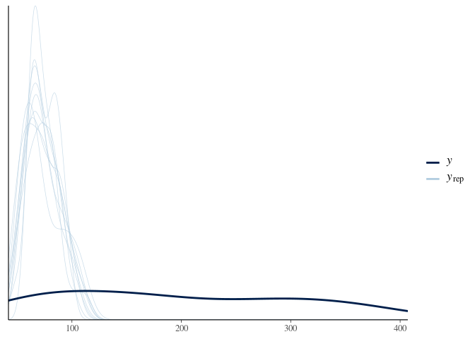

Provides population-level infectious disease models as an extension of brms.
Installation
You can install the unstable development version from GitHub with:
# install.packages("devtools")
devtools::install_github("epiforecasts/idbrms")Example
- Load
idbrms,brms,data.table(used for manipulating data), andggplot2for visualisation.
- Define simulated data containing cases of some infectious disease over time in a single region (with an initial growth of 20% a day followed by a decline of 10% a day). We then assume that deaths are a convolution of cases using a log normal distribution with a log mean of 1.6 (standard deviation 0.2) and a log standard deviation of 0.8 (standard deviation 0.2), and are then scaled by a fraction (here 0.4 (standard deviation 0.025)).
# apply a convolution of a log normal to a vector of observations
weight_cmf <- function(x, ...) {
set.seed(x[1])
meanlog <- rnorm(1, 1.6, 0.2)
sdlog <- rnorm(1, 0.8, 0.1)
cmf <- cumsum(dlnorm(1:length(x), meanlog, sdlog)) -
cumsum(dlnorm(0:(length(x) - 1), meanlog, sdlog))
conv <- sum(x * rev(cmf), na.rm = TRUE)
conv <- round(conv, 0)
return(conv)
}
obs <- data.table(
region = "Glastonbury",
cases = as.integer(c(10 * exp(0.2 * 1:25),
10 * exp(0.2 * 25) * exp(-0.1 * 1:25))),
date = seq(as.Date("2020-10-01"), by = "days", length.out = 50))
# roll over observed cases to produce a convolution
obs <- obs[, deaths := frollapply(cases, 15, weight_cmf, align = "right")]
obs <- obs[!is.na(deaths)]
obs <- obs[, deaths := round(deaths * rnorm(.N, 0.4, 0.025), 0)]
obs <- obs[deaths < 0, deaths := 0]- Visual simulated data (columns are cases and points are deaths).
ggplot(obs) +
aes(x = date, y = cases) +
geom_col(fill = "lightgrey") +
geom_point(aes(y = deaths)) +
theme_minimal()
- Prepare the data to be fit using the convolution model.
prep_obs <- prepare(obs, model = "convolution", location = "region",
primary = "cases", secondary = "deaths")
head(prep_obs, 10)
#> location date time index init_obs cstart cmax primary secondary
#> 1: Glastonbury 2020-10-15 0 1 1 1 1 200 42
#> 2: Glastonbury 2020-10-16 1 2 1 1 2 245 47
#> 3: Glastonbury 2020-10-17 2 3 1 1 3 299 54
#> 4: Glastonbury 2020-10-18 3 4 1 1 4 365 74
#> 5: Glastonbury 2020-10-19 4 5 1 1 5 447 59
#> 6: Glastonbury 2020-10-20 5 6 1 1 6 545 113
#> 7: Glastonbury 2020-10-21 6 7 1 1 7 666 115
#> 8: Glastonbury 2020-10-22 7 8 1 1 8 814 160
#> 9: Glastonbury 2020-10-23 8 9 1 1 9 994 158
#> 10: Glastonbury 2020-10-24 9 10 1 1 10 1215 221- Fit the model assuming a Poisson observation model (It is important to use an identity link here as
idbrmprovides its own link by default).
fit <- idbrm(data = dt)- Summarise fit.
summary(fit)
#> Family: poisson
#> Links: mu = identity
#> Formula: secondary ~ idbrms_convolve(primary, scale, cmean, lcsd, cmax, index, cstart, init_obs)
#> scale ~ 1
#> cmean ~ 1
#> lcsd ~ 1
#> Data: data (Number of observations: 36)
#> Samples: 4 chains, each with iter = 2000; warmup = 1000; thin = 1;
#> total post-warmup samples = 4000
#>
#> Population-Level Effects:
#> Estimate Est.Error l-95% CI u-95% CI Rhat Bulk_ESS Tail_ESS
#> scale_Intercept -0.86 0.02 -0.89 -0.83 1.00 3820 2870
#> cmean_Intercept 1.54 0.03 1.47 1.61 1.00 3874 2773
#> lcsd_Intercept -0.28 0.06 -0.40 -0.15 1.00 3777 2822
#>
#> Samples were drawn using sampling(NUTS). For each parameter, Bulk_ESS
#> and Tail_ESS are effective sample size measures, and Rhat is the potential
#> scale reduction factor on split chains (at convergence, Rhat = 1).- Explore estimated effect sizes (we approximately should recover those used for simulation).
exp(posterior_summary(fit, "scale_Intercept"))
#> Estimate Est.Error Q2.5 Q97.5
#> b_scale_Intercept 0.4236644 1.017188 0.409688 0.4379042
posterior_summary(fit, "cmean_Intercept")
#> Estimate Est.Error Q2.5 Q97.5
#> b_cmean_Intercept 1.541415 0.03406508 1.474534 1.607168
exp(posterior_summary(fit, "lcsd_Intercept"))
#> Estimate Est.Error Q2.5 Q97.5
#> b_lcsd_Intercept 0.7562595 1.06484 0.670132 0.8572652- Expose model stan functions.
expose_functions(fit)- Posterior predictive check. Runs without error but looks unlikely to be correct.
pp_check(fit)
#> Using 10 posterior samples for ppc type 'dens_overlay' by default.
- Plot conditional effects (fails with due to mismatched vector sizes in the stan dot product + there are no variables in this model so should always fail).
plot(conditional_effects(fit), ask = FALSE)